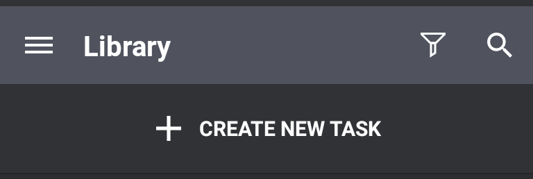
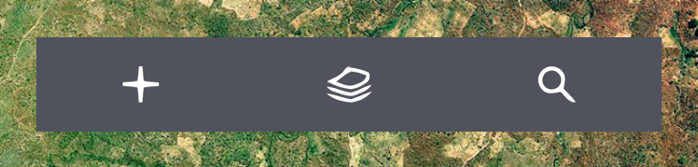
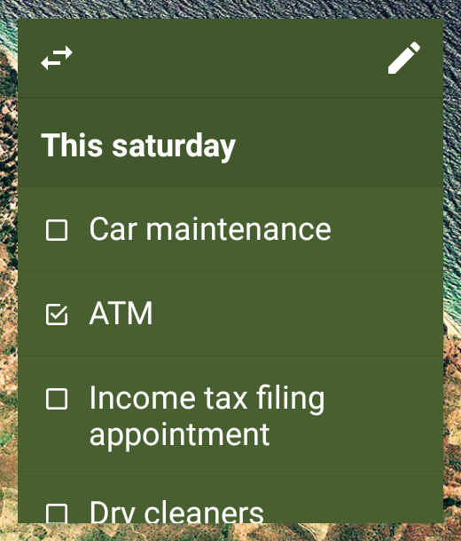
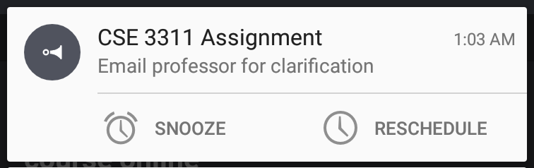

Help Topics
Basic Usage

Nudge launches into the Library. This is where all active tasks (those that are not Archived or Deleted) reside. To create a new task, click to start the editor.
{kind=link}
Common Operations
{kind=link}
The archive button toggles the task's status between archived & unarchived.
{kind=link}
Tasks can hold a due date when they are in the pending state. Clicking 'MARK AS DONE' changes the tasks status to 'COMPLETE' and clears any set due date. Reminders, however, do not depend on the task's current status. A pending task, as well as a completed one, can have a reminder set.
{kind=link}
Inside Library, Archive & Recycle Bin activities, long-pressing on a task triggers the multiple-selection mode and shows the contexual action-bar. Options available for selected notes differ between the Library, Archive and Recycle Bin. Options also differ based on the number of notes selected.
Attachments
{kind=link}
To add an attachment to a task, choose a type from the drop-down shown above.
When working with lists, use Next and Prev keyboard buttons to navigate between the list items. Pressing Enter or Return adds a new item at the following position. If the text-cursor is in the middle when Enter is pressed, the new item is initialized with the text following the cursor. Pressing Enter on an empty item hides the keyboard. Pressing Next on the last item does the same.
Gestures
Left-to-Right and Right-to-Left swipe gestures perform different actions based on the current activity.
Activity |
Left-to-Right |
Right-to-Left |
|---|---|---|
Library |
Delete |
Archive |
Archive |
Delete |
Unarchive |
Recycle Bin |
Delete Permanently |
Undelete |
Reminders |
Remove Reminder |
Remove Reminder |
Tagged |
Remove Tag from Task |
Remove Tag from Task |
Tags
{kind=link}
Nudge provides a basic tagging system to organize your tasks. While in the Editor, click the tag icon. This will display the tag selection dialog:

To search or filter, start typing the tag name - the filtered tags will be refreshed automatically. After the intended tag has been found, click to attach it to the note:
{kind=link}
For creation/revision of tags, head over to Tags activity using the Navigation Drawer. To create a new Tag, click on Add button in the action-bar.
{kind=link}
Note: Tag names have to unique (case-insensitive). This property is checked during creation/revision of a tag.

Clicking on a tag takes you to the Tagged activity which displays the tasks using this tag. This is also where you can edit the tag's name or color. Swiping a task (Left-to-Right or Right-to-Left) removes the tag from that task. Through long-press (multiple selection mode), you can remove the tag from multiple tasks.
Reminders
To add a reminder on a task, open it in the Editor. You'll find reminder icon on bottom-right. Clicking it will display the calendar. To switch to clock-view, click on the time at bottom right.
{kind=link}
{kind=link}
Note that the calendar view displays a button with time 9:00 AM in its bottom-right corner. If you click Done at this point, the reminder will be set for March 19, 9:00 AM. Alternatively, you can click on 9:00 AM to go to the clock view, and select another time. The selected date will then be displayed on the bottom-left of clock view.

Once the reminder is set, clicking on the date launches the calendar for revision. To revise the time, click on the time to open clock view. To cancel this reminder, click .
A Reminder is set only if the chosen date & time is at least 1 minute in future. Otherwise, they are dropped without prompt. Currently, only one-time reminders can be set. In future, Nudge will support recurring reminders.
Homescreen Widgets
To create, edit & access tasks quickly, use homescreen widgets. Currently, Nudge provides two types of widgets:

The Quick Access widget allows you to create a new task, launch the Library activity, and start the Search activity.

Task Display widget gives you quick access to a task of your choice, along with its attachment. The widget is scrollable, and lets you to view the entire task/attachment.
Clicking launches the Editor activity. You can also choose a different task to display using the switcher button: .
When a list attachement is being displayed in the widget, the items can be checked on or off by clicking on them. There's no need to open the Editor to do so.
Notifications

Notifications are used for the sole purpose of reminding you of a task. Clicking on the notification takes you to the Editor. Shown above is the expanded version of a notification. The SNOOZE button lets you postpone the reminder by a fixed time interval - 30m, 1hr, 2hrs, 4 hrs, 24hrs - from then:

You can of course choose a specific date & time by clicking PICK A DATE & TIME. This will show the calendar & time view.
To access the calendar and time view directly (not through SNOOZE button), click RESCHEDULE button in the expanded notification.
Note that clicking SNOOZE or RESCHEDULE does not dismiss the notification. If you do postpone the reminder by one of the pre-defined snooze intervals, the notification will be removed and shown at the set time. Same happens when a new date & time is picked in calendar & time view using the RESCHEDULE button.